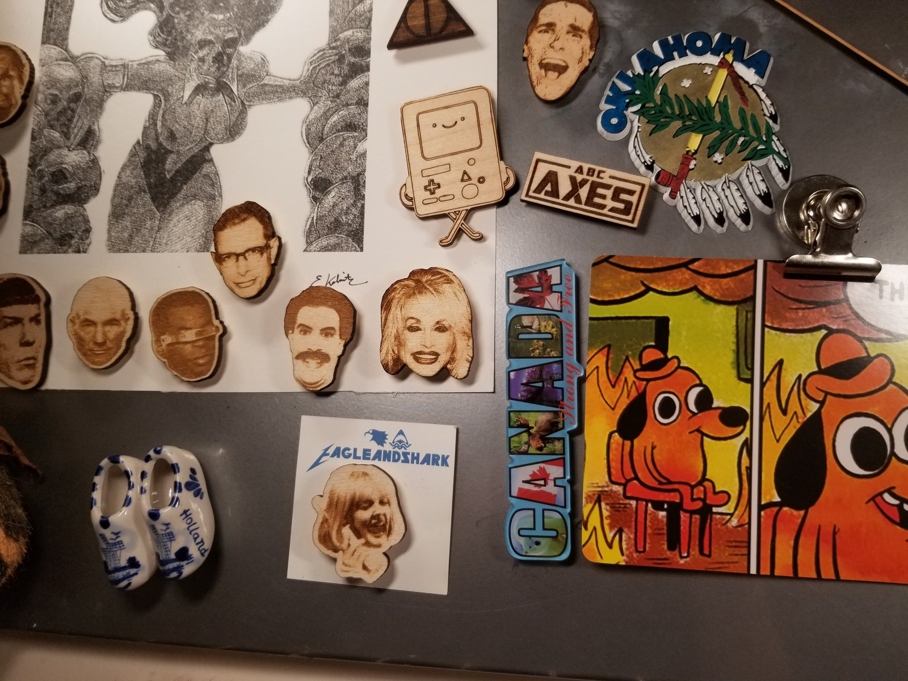
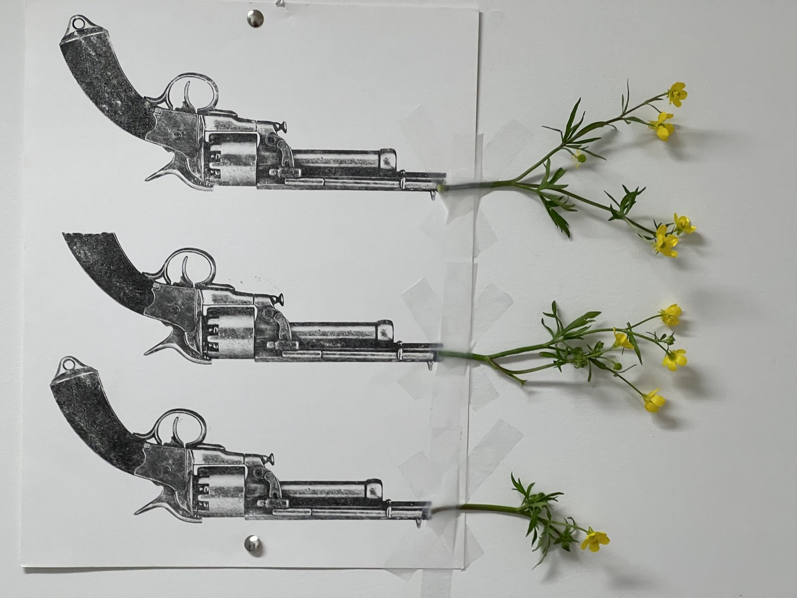
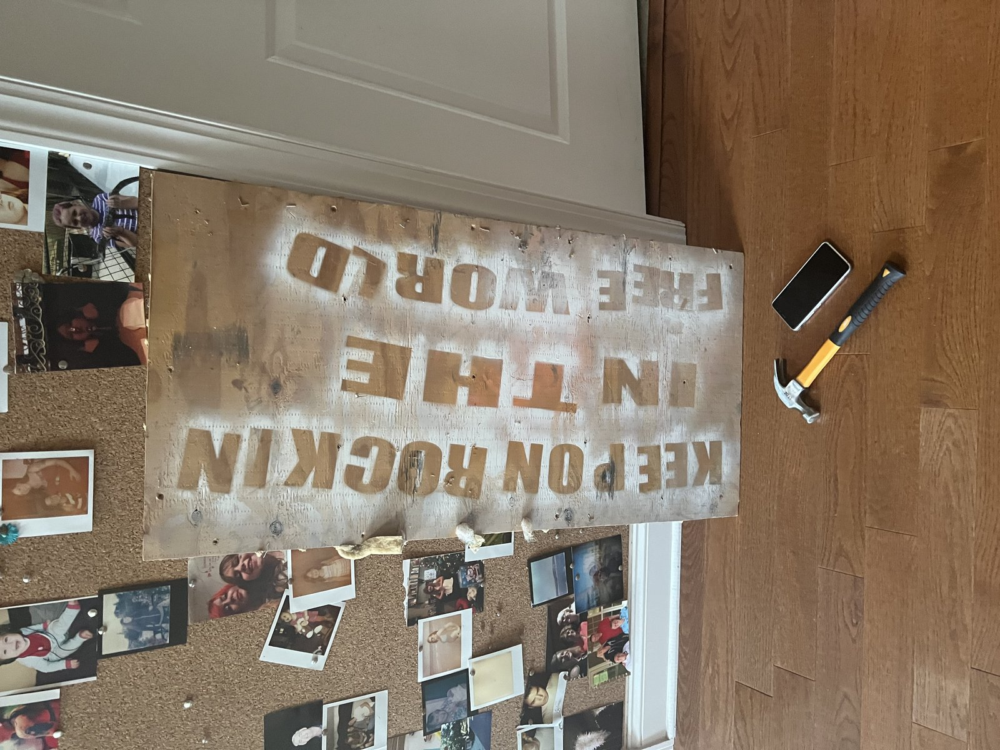
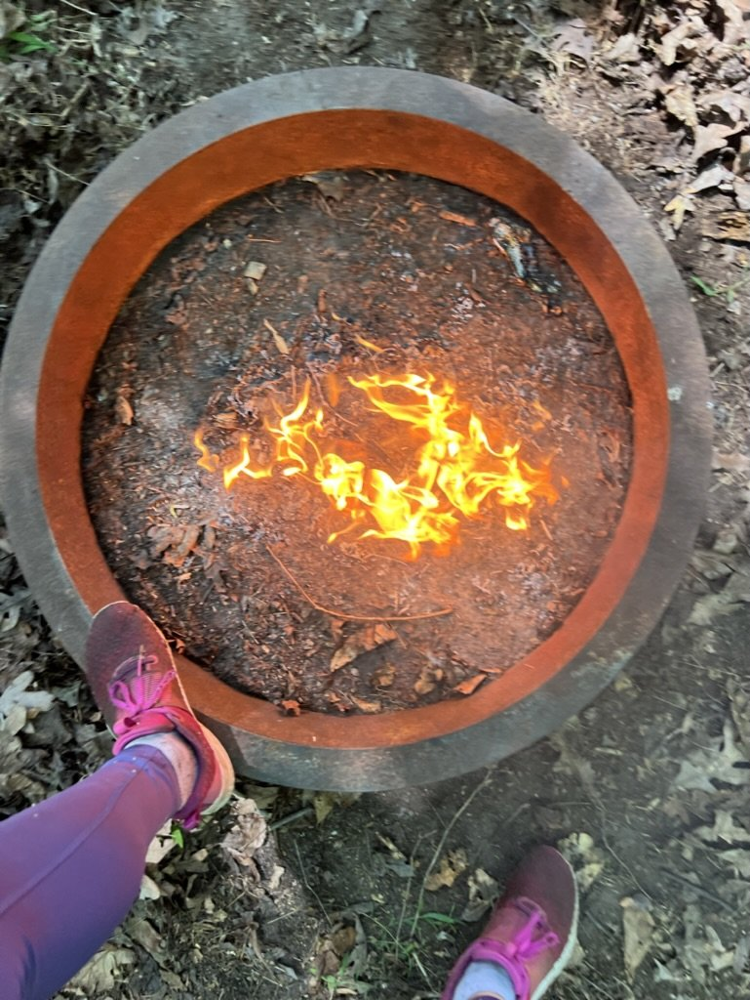
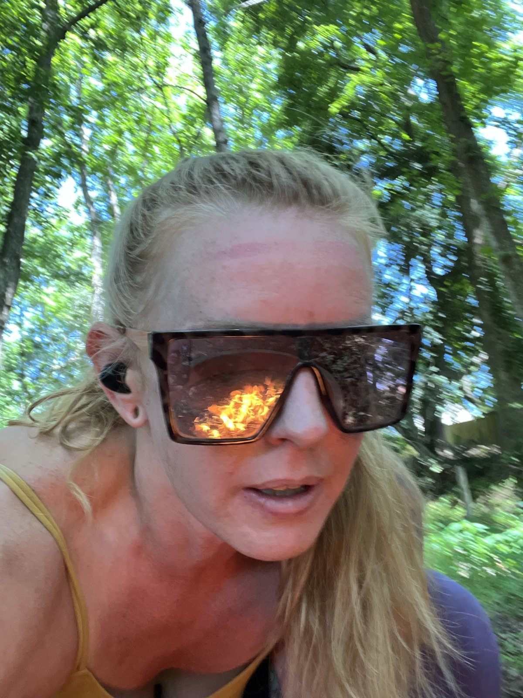
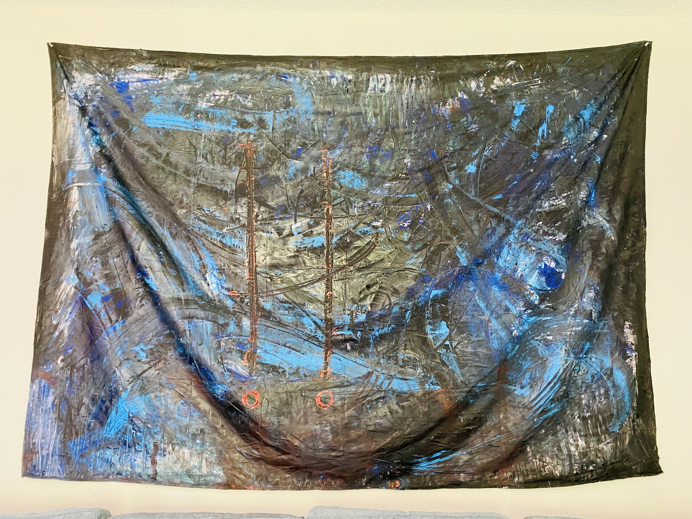

Hard Coded
Visual work archived on this site.
Physical and in-person art — hard-coded into the world, not just the screen.
6 works in this collection






Physical and in-person art — hard-coded into the world, not just the screen.
6 works in this collection





